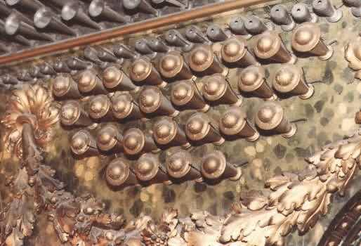

Viejos Spanish
Viegas Spanish

|
Viejas Spanish Viejos Spanish Viegas Spanish |
|
Williams translates Viejas and Viejos as �old women's voice� and �old men's voice�, and describes them as regals with �stopped resonators of similar length for all pitches� and thin, nasal tone. Grove describes them as thin Vox humanas in Spanish organs around 1750, often found en chamade. Maclean describes Viejos and Viegas as the bass and treble portions, respectively, of an 8' Vox Humana. Wedgwood translates Viejos as �the eyebrows�, and says: �The stop is said to derive its name from the shape of the cover or plug at the top of the pipe. (Hamilton's �Catechism of the Organ�).�
The following photographs are of the Jorge Bosch Bernat-Veri organ at the Royal Palace, Madrid, Spain, and appear here courtesy of Rick Berg.

The pipes to either side of the console are the
Viejos/Viejas.
Right above them are the pipes of the Orlos, and above that, the
Trompetería.

This is a close-up of the Viejas and the Orlos.
Viejas 8', Organo Mayor (right); Parroquia, Santanyí, Baleares, Spain; Bosch 1800's.
Viejos 16', Organo Mayor (right); El Salvador, Sevilla, Spain; de Bono 1794 (restored).
Viejos 16', Trompetería; Main Hall, Auditorio Nacional, Madrid, Spain; Grenzing 1991.
Viejos 8', Manual; Parroquia, Zafra, Badajoz, Spain; Hernandez 1717.
Viejos 8' (en chamade), Organ Mayor; San Sebastian, Antequera, Malaga, Spain; Munoz 1735.
No examples of Viegas are known. Contributions welcome.
Grove[1]: Regal, Viejas. Maclean[1]: Trompetería. Wedgwood[1]: Viejos. Williams[1]: Glossary: Viejas.|
Original website compiled by Edward L. Stauff. For educational use only. Viejos.html - Last updated 27 May 2002. |
Home Full Index |